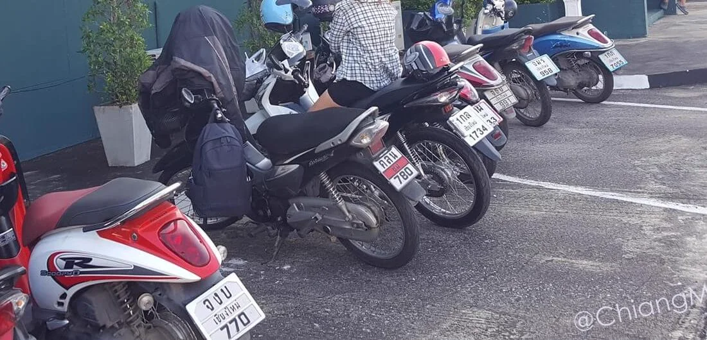
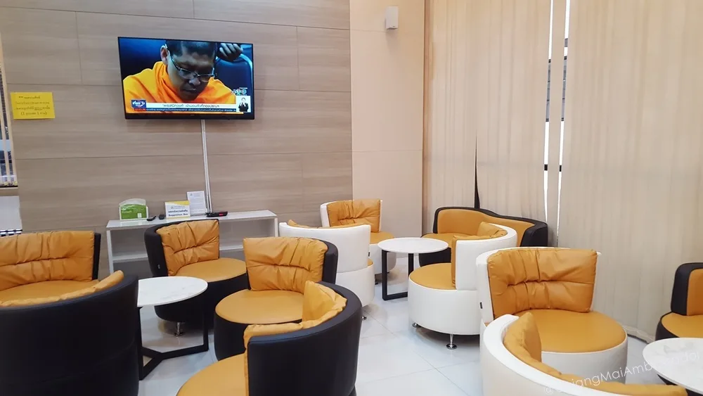
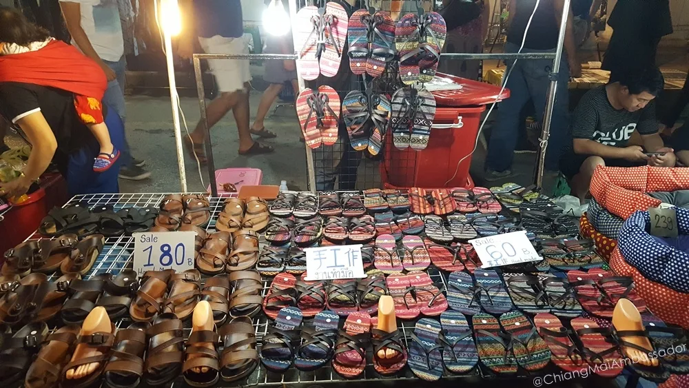
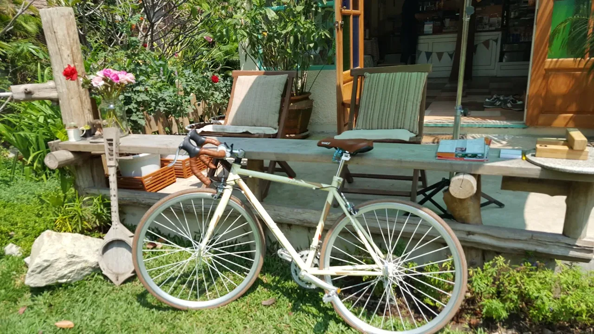
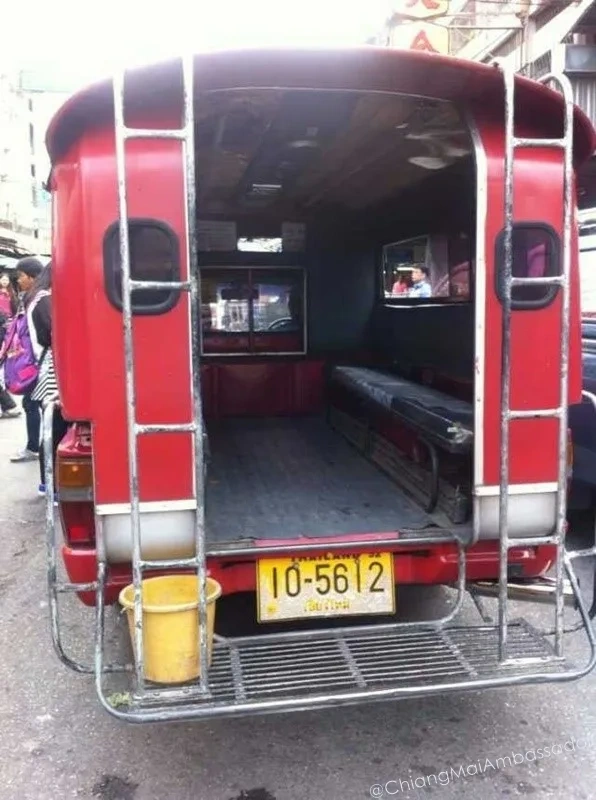
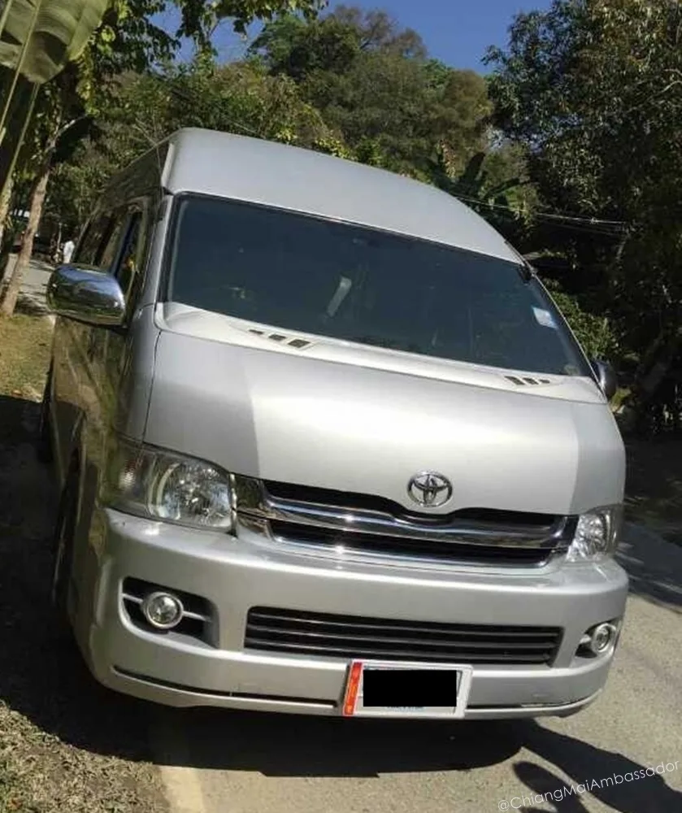

Top Tips For Coming To Chiang Mai
I hope you enjoy these top tips for coming to Chiang Mai.
There may be some double ups or crossover of points which just underlines the importance of those tips! Have fun and if you have any other tips, please let me know!
Walk! Walk a lot! Walk instead of ride if you have the time. You can see so much more when walking around. There are so many cool places you will find as you walk along. Be careful! Top tips when walking or trying to cross roads, ALWAYS remember that the cars have higher priority than YOU!
Above all!
Look both ways when trying to cross the road, in Thailand they drive on the opposite side of the road to many places. Be careful! So many foreigners almost get run over by a car basically because they had no idea that Thai drivers give not worry about pedestrians. So, if you are trying to cross the road. Look at the road first, and the traffic light second. Car drivers do not respect pedestrian crossings.
Health, Safety, and Legal Top Tips
- Buy travel insurance before leaving home. Medical costs can be high, and emergencies happen unexpectedly. Choose a plan with coverage for accidents, illness, and lost belongings to ensure peace of mind throughout your trip.
- If you want to rent a motorbike, make sure your travel insurance specifically covers motorcycle use. Many standard policies exclude this, leaving you exposed to expensive bills if anything goes wrong on the road.
- It’s not safe to learn motorbike riding in Chiang Mai. Local traffic can be unpredictable, with lots of new sights and distractions. Choose safer transport unless you are already confident and experienced on a motorcycle.
- For accidents, go to Bangkok Hospital or Chiang Mai Ram if you have insurance. Without insurance, McCormick or Maharaj Nakorn Chiang Mai Hospital offer more affordable care. Always bring ID and payment method; hospitals expect advance payment from foreigners.
*** AFTER HOURS ABSOLUTE EMERGENCY TELL AMBULANCE CMU OR MAHARAJ. it’s the only fully equipped ER! *** - Never get involved with drugs in Thailand. Laws are strict and enforcement is aggressive. Even small amounts or positive test results can mean serious consequences, including jail time or deportation.
- If you plan to work in Thailand, obtain a Non-Immigrant B business visa before arriving. This visa costs 2,000-5,000 THB depending on entry type. Critically, you also need a separate work permit (3,000 THB for one year). Working without both documents is illegal and carries fines exceeding 100,000 THB, deportation, and re-entry bans. Your employer must sponsor both and meet capital requirements. For complete details, see the Business Visa guide.


Booking, Accommodation, and Essentials
- Book accommodation early, especially during festival season like Songkran. Guesthouses and hotels fill up fast. Advance reservations save stress, ensure better choices, and sometimes offer discounts for early birds.
However for more long stay top tips, booking early is almost impossible and you generally need to wait until you arrive to find the perfect spot for long term stay.
Usually it only takes a week to get something right for you and you are into a long stay option in no time! - For fresh fruit, vegetables, and deals, visit Muang Mai market in the morning. The market features hundreds of stalls not found on tourist maps, close to the US consulate, and offers real local flavor and low prices.
Navigation and Movement
- Walking in Chiang Mai lets you see the city’s hidden gems. Side streets and alleys are full of surprises. small cafes, temples, markets, and artwork. Put on sturdy shoes and use sidewalks where possible.
- Never assume cars will yield. Pedestrians don’t have priority here; even crosswalks and “walk” signals aren’t always respected. Be alert, wait for gaps in traffic, and don’t rush crossings.
- Always look both ways crossing the street. Most Thais drive on the left, which is the opposite of many countries. Double-check directions. especially at busy intersections. and make eye contact with drivers before stepping off the curb.
- Thai drivers use the left side of the road. Be careful if you’re used to the opposite. Look for oncoming vehicles from both directions; this is vital when crossing or turning, especially outside tourist areas.
- Even with green “walk” lights or zebra stripes, traffic may not stop. Cross with caution. Use hand signals or pause at medians if needed. Watch motorbikes! They’re quick and often ignore rules.
- Don’t trust the lights to protect you. Many drivers run red lights or ignore crosswalks. Always check every lane of traffic before crossing and stay visible to drivers until you’re safely across.
- When stepping onto the road, look for actual traffic before trusting traffic signals. Some local intersections are confusing, so wait, observe, and only cross when you’re sure it’s safe.
Social and Cultural Top Tips
- Ask seasoned expats or travelers for advice and stories. They’ve faced common mistakes over many visits and can share tips for avoiding trouble, saving money, and settling in faster.
- Search for food stalls or restaurants frequented by older locals. Longevity often means consistency, quality, and true Thai recipes. These spots offer authentic food at lower prices than touristy alternatives.
- Smile when interacting with anyone, taxi drivers, hotel staff, market vendors. Good manners and a friendly attitude build positive experiences. Thais value politeness and will go the extra mile if you show respect.
- Wear modest clothing in public spaces and temples. Tank tops, shorts, and swimwear are for the beach. For guidance, observe how Thai women dress; covering shoulders and knees shows respect.
- When unsure about local dress, copy what Thai women wear. This applies especially in religious or cultural sites. Being respectful means blending in and honoring local traditions, while avoiding unwanted attention.
- Your speaking style matters. Use gentle voice and calm words. Northern Thai people are especially tuned to tone and volume. Speaking quietly and respectfully prevents misunderstandings and earns trust.
- Don’t get upset or yell, even if you feel you’re in the right. Thais see anger negatively, and you’ll get less help. Calm responses build relationships and often solve problems faster.
- Adopt the phrase “Mai pen rai”. It means “never mind” or “don’t worry.” Use it often; locals appreciate those who are laid-back and flexible. It’s the key to enjoying Chiang Mai’s relaxed atmosphere.
- Shower daily. Thai people value cleanliness highly, taking multiple showers on hot days. Good hygiene shows you respect their standards. Bring deodorant, wash hands often, and dress in clean clothes.
- Wear shoes in all public areas. The only exception is working in rice fields. Bare feet in markets, malls, or busy streets is considered dirty or disrespectful.


Lifestyle and Mindset
- Chiang Mai moves at its own pace. Don’t expect rigid schedules; buses, meetings, or events often start late. Embrace the slower rhythm and enjoy moments as they happen.
- Smile, relax, and don’t worry if things don’t go as planned. Local culture values enjoyment and harmony over strict timing.
- Have a flexible holiday mindset. Don’t get frustrated over delays or changes. Say yes to new experiences and be open to unexpected adventures.
Traffic and Transport Top Tips
- Always pause before crossing streets, even at designated spots. Scan every lane, check for turning cars, and move when safe.never on blind faith in traffic signals.
- At intersections, cars turning left may keep moving even if signals say stop. Wait, make eye contact, and stay clear of these vehicles.
- On country roads at night, watch for potholes. Some are large and deep, and government repairs can be slow. Extra caution may save your vehicle and health.
- In city traffic, drivers often overtake from both sides. Don’t panic. Use mirrors and keep to your lane; sudden moves can create accidents.
- Large pickups and SUVs drive more boldly here. Give them space, avoid arguments, and never challenge them on the road.
- Never honk or shout aggressively at another motorist. Serious incidents have happened in the past. Calm interactions prevent dangerous confrontations.
- Don’t expect right of way anywhere, including roundabouts. Get used to the local flow and follow what others do in traffic.
- Always wear a helmet on motorcycles. Police often check foreigners and issue fines on the spot for not wearing protection.



Songtaow and Local Travel Tips
- More passengers in a songtaow usually means a longer, less direct trip. Flag down emptier songtaows for a quicker journey.
- Empty songtaows are best; you won’t be taken far out of your way to drop off others first. Confirm your destination before getting in.
- Red songtaows travel anywhere in Chiang Mai, while green and yellow ones follow fixed routes. Check color and number before hopping in.
- If unsure about your driver’s route, sit up front. Point to your stop as you approach. Drivers respond well to clear signals and guidance.
- Tipping is not needed for songtaow or tuk tuk drivers. Pay the agreed fare. Politeness means more in Thai service settings.
- Verify the driver knows your destination before departure. Miscommunication can lead to long detours or confusion.
- If the driver seems uncertain or confused, choose another songtaow or tuk tuk. Trust your gut, being direct and clear helps prevent wasted time.
- At every crossing, assess the situation. Traffic, driver intent, and light cycles can all change quickly. Take your time to stay safe.
Food and Local Experience
- Busy food stalls are reliable! Locals choose them for quality and taste. Crowds mean the food is fresh and trusted by residents.
- Try street food at Chiang Mai’s markets. Dishes are tasty and safe, often prepared in front of you. It’s a great way to explore local flavor.
- Avoid comparing Chiang Mai to your home country. Local customs, traffic, and timing are different. Adapting makes your experience better.
- Carry spare coins! Small bills help with songtaow rides and market purchases. Many local vendors prefer cash and may not have change for large notes.
- Savor local fruits. Enjoy mango, rambutan, lychee, and others when in season. Ask vendors for suggestions; many will offer samples.
- Respect cultural differences, observe and learn. Locals appreciate visitors who show genuine interest and humility.
- Treat yourself as a humble guest in Chiang Mai. Take part in the city’s culture, traditions, and community spirit for a truly memorable stay.
- Food Delivery Services are available in Chiang Mai and many local family restaurants are available for delivery also!
I hope you enjoyed learning these top tips!


Thailand Do's and Don'ts: Cultural and Legal Essentials
Thailand is a more pleasant place to live and visit when you're aware of certain cultural practices and legal requirements. Here are critical do's and don'ts to keep in mind.
Passports and Documents
- Keep your passport with you at all times. If asked to show it by a police officer and you don't have it, you can be arrested. Spending the night in a Thai jail is not pleasant.
- Never give your passport to a rental car company as security. American-based rental companies such as Hertz and Budget do not ask for passports. This is a common scam targeting foreigners.
- Make copies of your passport (at least 2 copies). Keep them separate from your original so you have identification if needed.
- If you're driving, obtain an international driver's license before arriving in Thailand. Call AAA for information. An international licence is required; without one, you'll face a 500 THB fine at roadblocks.
- If you now live in Thailand, obtain a Thai driver's license. Most places will accept a Thai licence in lieu of your passport.
Traffic and Motorcycle Safety
- There is a motorcycle helmet law in Thailand. Although many Thais don't wear one, police are starting to enforce it more strictly to reduce traffic deaths. No helmet equals a fine.
- If you're driving a car or motorcycle, understand that you're driving on the left side of the road, opposite to many countries. Double-check before turning.
Respect for the Monarchy and Authority
- Do not speak negatively about the King or the Royal Family. People have been arrested for this offense. Show genuine respect for the monarchy and you'll stay out of serious trouble.
Appearance and Conduct
- Appearance is extremely important in Thailand. Don't walk around looking like a bum. Wear clean clothes, avoid revealing shorts, and try to wear shirts with sleeves in public areas.
- Don't show public displays of affection or drunkenness. Thais don't like overt kissing or hugging in public, and public drunkenness is seen negatively. Although unlikely to be confronted directly, you will lose respect without knowing it.
- Do "Wai" to show respect when greeting people. However, don't Wai to children. Although a Thai won't comment on it, it's considered inappropriate.
Social and Cultural Etiquette
- Don't talk politics with Thais. They're not interested in your political views and don't want to put themselves in a situation where conversation could turn controversial.
- Do register with your local embassy when you arrive in Thailand. Although not a legal requirement, it's a good way to meet people and ensures you can be contacted in case of emergency.
- Do try to learn some Thai language, even just the basics. "Learn Survival Thai" will make your stay much more enjoyable and shows respect for the culture.
- In major towns and cities, don't jay-walk. Although you'll see it all day and police rarely enforce it, they're starting to crack down due to rising pedestrian accidents. Fine is about 1,500 THB (about 50 AUD).
- Don't be surprised if you're invited to dinner but end up paying for everyone. In Thailand, cultural tradition dictates that the most "senior" person at the table offers to pay. Test the waters by reaching for the bill casually; locals will make it clear who's paying.
- Do smile. Many foreigners walk around without the common courtesy to smile or greet locals ("Sawatdee Krup"). Many Thais, even those not well off, are smiling and courteous. Reciprocate this warmth.
Emergency Numbers for Chiang Mai
General Emergency (Police, Fire, Ambulance): 191
Ambulance & Medical Emergency: 1669
Fire Department: 199
Tourist Police (English-speaking): 1155
Highway Police: 1193
Traffic Police: 1197
Royal Thai Police: 1599
Tourist Service Centre: 1672
Vehicle Theft Police: 1192
Ambulance and Rescue (mainly road accidents): 1554
Chiang Mai Ram Hospital: 053-920-330, 053-894-260
McCormick Hospital: 053-921-777, 053-921-799
Bangkok Hospital Chiang Mai Emergency: 1719, 085-208-9888
Chiang Mai Municipality (CMFORCE): 083-905-3186, 062-112-2500